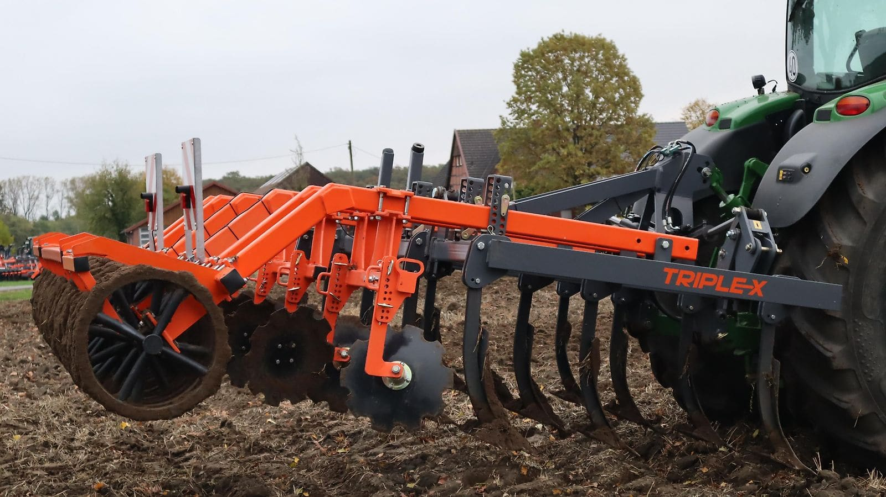
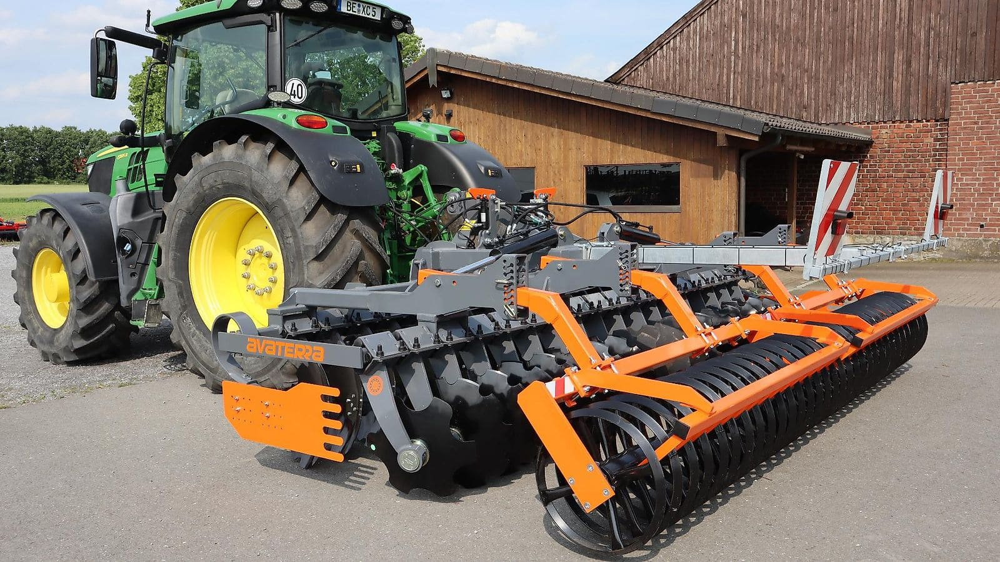
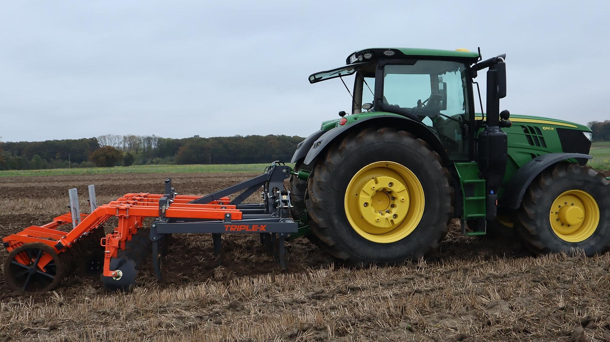
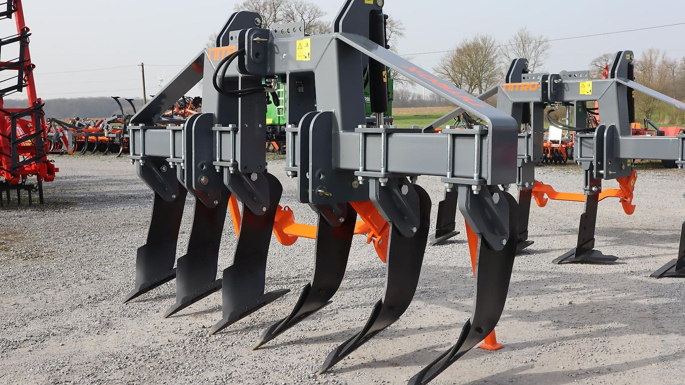
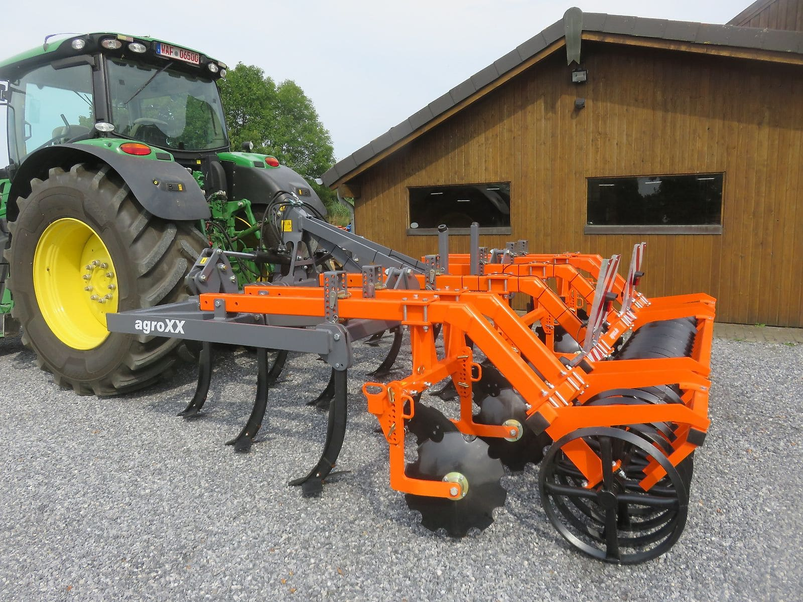
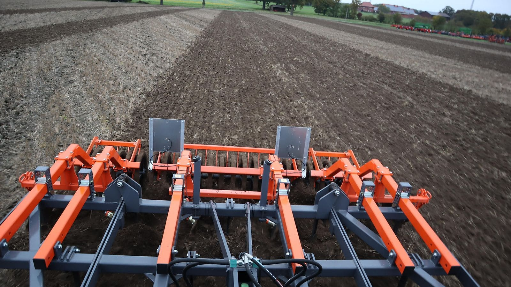

Bodenbearbeitung aus Ennigerloh
Maschinen, die im Boden überzeugen.
TRIPLE-X, AVATERRA, NITRO-X, ESCUDERO und Quivogne: Wir beraten Sie als Händler persönlich, liefern ab Lager und sprechen Ihre Sprache, in elf Sprachen.

MulchgrubberTRIPLE-X MulchgrubberDer Premium-Mulchgrubber für intensive Mischarbeit. KurzscheibeneggenAVATERRA KurzscheibeneggenGezackte Scheiben, Walze nach Wahl, klappbar mit Beleuchtung. TiefenlockererNITRO-X TiefenlockererBodenlockerung bis 55 cm Tiefe, mit Steinsicherung.Exklusiv bei agroXXSchälpflügeESCUDERO Ecologic Onland SchälpflügeEcologic Onland Dreh-Schälpflüge mit 6 bis 10 Scharen.
 WalzenprogrammQuivogne Cambridge-WalzenCambridgewalzen, Frontpacker und Messerwalzen.
WalzenprogrammQuivogne Cambridge-WalzenCambridgewalzen, Frontpacker und Messerwalzen.
 Weiteres ProgrammWeiteres ProgrammKreiseleggen, Muldenkipper, Schlepperreifen und Verschleißteile.
Weiteres ProgrammWeiteres ProgrammKreiseleggen, Muldenkipper, Schlepperreifen und Verschleißteile.

Unser Schwerpunkt
TRIPLE-X Mulchgrubber
Intensive Mischarbeit, sauberes Strohmanagement und zügiges Auslaufen von Ausfallgetreide: Der TRIPLE-X ist ein Dreibalkengerät mit kräftigem Rahmen und durchdachtem Zinken- und Scharsystem, für Schlepper von 140 bis 300 PS.
- 3,0–4,8 mArbeitsbreite
- bis 30 cmArbeitstiefe
- 140–300 PSSchlepperleistung
- S355Feinkornstahl-Rahmen
Marken im Programm
agroXX · Quivogne · Escudero · Pronar · Michelin · Alliance · Ascenso
Sprachen: Deutsch, Englisch, Französisch, Spanisch, Italienisch, Portugiesisch, Polnisch, Rumänisch, Bulgarisch, Ungarisch, Japanisch.
Beratung direkt vom Händler
Rufen Sie an, schreiben Sie per WhatsApp oder E-Mail. Wir sprechen mit Ihnen über Maschine, Ausstattung und Lieferung.